Run the disturbance model in GEO. Uses TwoArraySC.mat
------------------------------------------------------------------------
See also Q2Mat, QLVLH, Constant, Date2JD, Period, Disturbances, SunV1
------------------------------------------------------------------------
Contents
g = load('TwoArraySC');
DrawSCPlanPlugIn(g);
jD = Date2JD([3 22 2001 0 0 0]);
[uSun, rSun] = SunV1( jD );
d = Disturbances( 'defaults' );
solarFlux = 1367;
d.s = solarFlux*uSun;
d.shadow = false;
d.units = 'm';
d.planet = 'earth';
d.mu = Constant('mu earth');
hD = Disturbances( 'init', g, d );
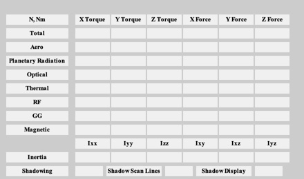 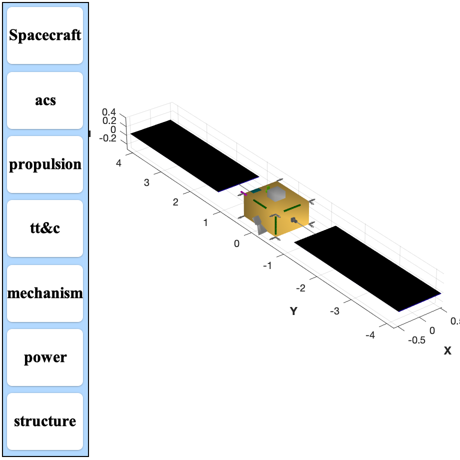
Prepare 100 samples in a circular orbit
nSamp = 100;
rOrbit = 42167;
period = Period(rOrbit);
d.tSamp = period/nSamp;
theta = linspace(0,2*pi,nSamp);
c = cos(theta);
s = sin(theta);
d.r = rOrbit*[c;s;zeros(1,nSamp)];
v = sqrt(d.mu/rOrbit)*[-s;c;zeros(1,nSamp)];
qLVLH = QLVLH( d.r, v );
for k = 1:nSamp
g.body(1).bHinge(k).angle = theta(k);
g.body(1).bHinge(k).axis = 2;
g.body(2).bHinge(k).angle = theta(k);
g.body(2).bHinge(k).axis = 2;
g.body(3).bHinge(k).b = Q2Mat( qLVLH(:,k) )';
end
Run
Disturbances( 'run', g, d, hD );
Figui;
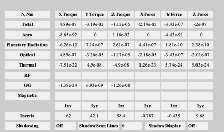 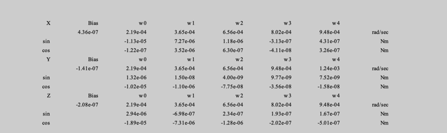 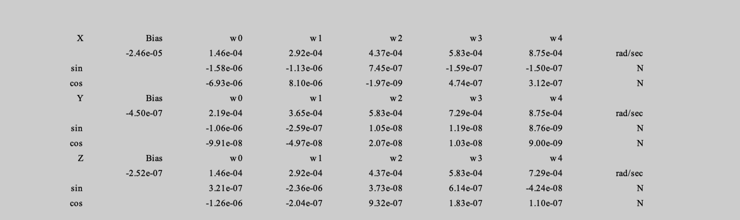 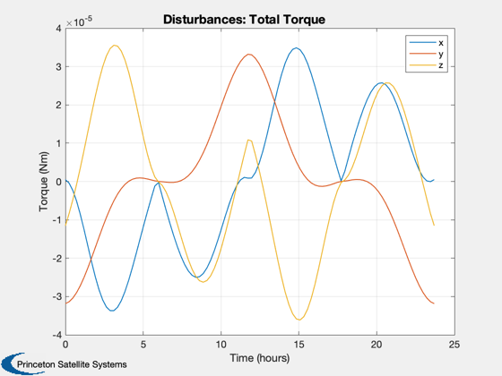 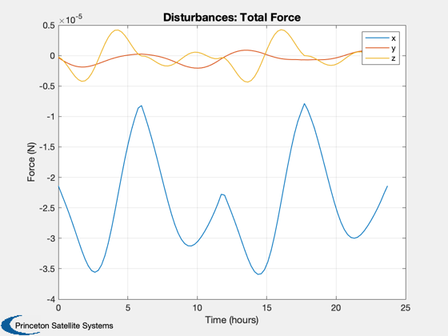 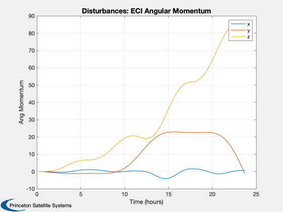 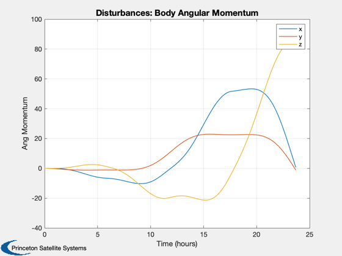 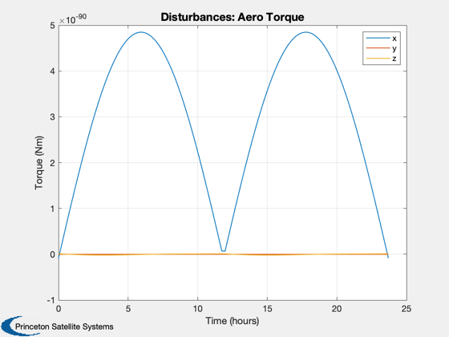 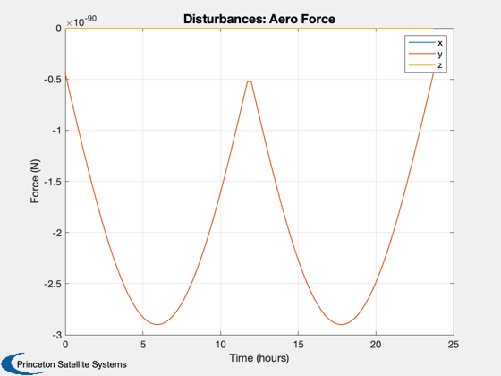 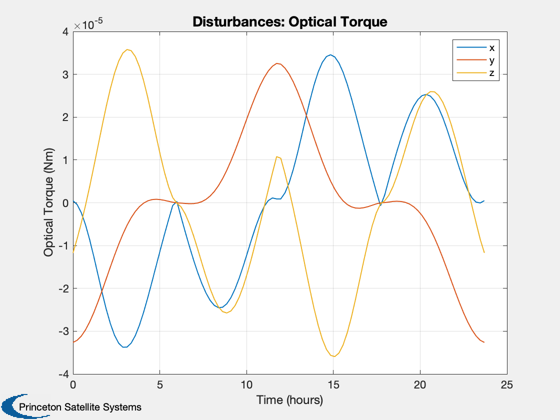 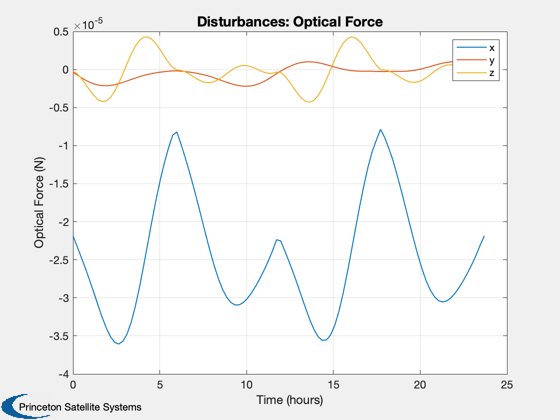 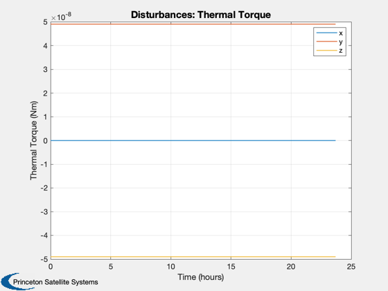 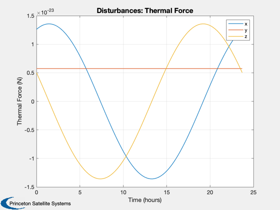 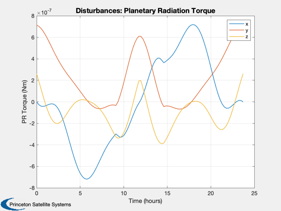 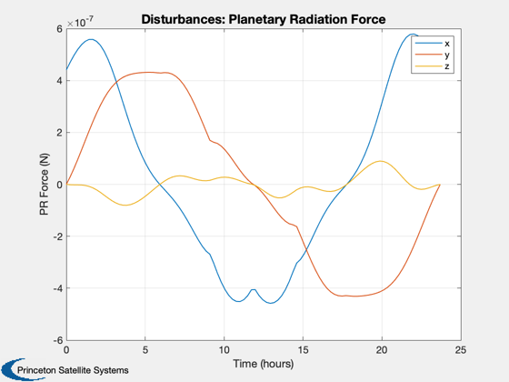 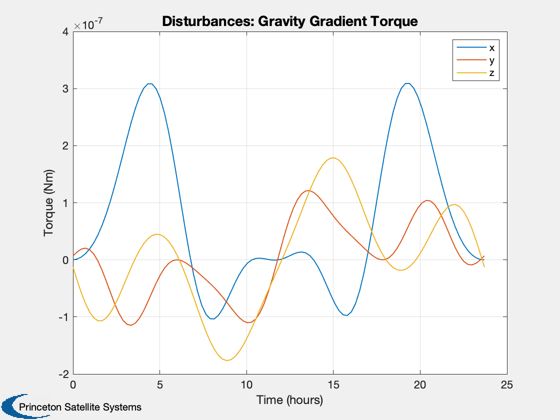 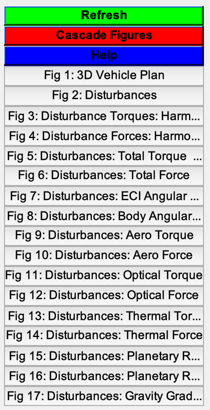